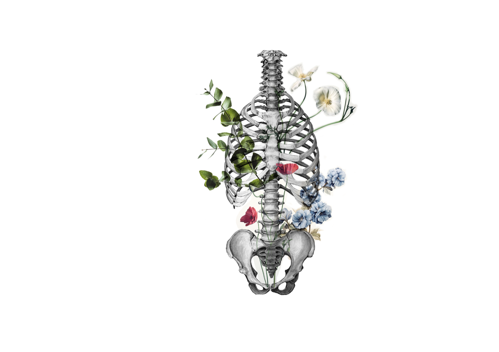

Localizar
Compartes qué zona necesita atención. A partir de ahí, la sesión se adapta a tu cuerpo y a tu momento.
Shiatsu · Madrid
Shiatsu corporal · Facial japonés · Madrid

Técnica manual japonesa, con ropa y adaptada a tu ritmo. Un espacio para recuperar equilibrio, descanso y bienestar corporal.
Shiatsu, dicho sencillo
El Shiatsu es una práctica manual japonesa basada en la escucha del cuerpo. Combina presión con dedos y palmas, movilizaciones y estiramientos suaves. En su tradición el cuerpo se lee por recorridos, no solo por músculos: por ellos circula el , la energía y el movimiento vital, y a lo largo de cada uno hay puntos —— donde ese recorrido se nota más. Se hunden un poco bajo el pulgar y, desde ahí, afloja algo que está a un palmo de distancia. Hay varios cientos repartidos por todo el cuerpo. Cada sesión se adapta a tu momento, respetando el ritmo y las necesidades con las que llegas.
Ki · 気Energía vital que, en la tradición japonesa, circula por el cuerpo a través de recorridos llamados meridianos. El Shiatsu trabaja sobre esos recorridos para favorecer su flujo y su equilibrio. Tsubo · ツボCada uno de los puntos de un meridiano donde la presión tiene efecto. Se reconocen al tacto: ceden un poco bajo el dedo, como una pequeña depresión.Nueve puntos de referencia para acercarte al mapa corporal del Shiatsu. Recorre la lámina y descubre dónde están.

Mueve el ratón por la lámina
Entre las cejas, en la línea media de la frente.
Un punto de referencia en la frente. Se trabaja con una presión suave y atenta.
En lo alto del hombro, a media distancia entre la base del cuello y la punta del hombro.
Un punto de referencia en la parte alta del hombro, una zona donde suele acumularse carga.
En el centro del pecho, sobre el esternón, a la altura de los pezones.
Un punto de referencia en el centro del pecho. Se aborda siempre desde una escucha suave y respetuosa.
En la columna, a la altura de la cintura, entre las últimas costillas y la pelvis.
Un punto de referencia en la zona lumbar, dentro del recorrido de espalda y caderas.
En el dorso de la mano, en el músculo que sobresale al juntar pulgar e índice.
Un punto de referencia en la mano que se integra en el trabajo de cuello, hombros y mandíbula.
Cuatro dedos por debajo de la rodilla, un dedo hacia fuera de la espinilla.
Un punto de referencia bajo la rodilla, presente en muchos recorridos de cuerpo entero.
En la planta del pie, en el hueco que se forma al doblar los dedos.
Un punto de referencia en la planta del pie, para cerrar o acompañar un trabajo corporal amplio.
Debajo de la lengua, uno a cada lado del frenillo.
Punto de referencia bajo la lengua. No se trabaja sin valoración y consentimiento previos.
En el facial japonés, la atención se dirige a la musculatura de mejillas, mandíbula, cuello y rostro. El trabajo se adapta a tu comodidad y a lo que el día permite.
Dentro del labio superior, en el frenillo.
Punto de referencia en el frenillo del labio superior. Se aborda solo cuando resulta adecuado para la sesión.

El espacio también es parte del cuidado
“El bienestar empieza cuando el cuerpo recupera su ritmo.”

Sesión adaptada
Archivo · 04 fichasTu cuerpo marca el ritmo
Una guía breve para entender el enfoque Shiatsu y elegir la sesión que mejor acompaña tu momento.
Sesiones
Elige el tiempo que necesitas. Cada sesión combina técnica manual, escucha y ritmo para recuperar bienestar corporal.
Cuerpo · Atención localizada
Para atender una zona concreta y recuperar comodidad en el movimiento.
Pedir cita · Shiatsu corporal, 60 minutosCuerpo entero · Ritmo pausado
Para recuperar equilibrio cuando el cuerpo pide una atención más completa.
Pedir cita · Shiatsu corporal, 90 minutosRostro · Mandíbula · Cuello
Para recuperar armonía en mandíbula, cuello y rostro.
Pedir cita · Facial japonés, 50 minutosCorporal + Facial · Una experiencia integral
Cuerpo y rostro en una misma cita para recuperar bienestar de forma completa.
60 + 50 min · por separado, 105 €
Pedir cita · Sesión completa, 110 minutosQuién te acompaña
Soy Eme. Acompaño a personas que buscan aliviar la tensión de espalda, hombros y mandíbula, recuperar bienestar corporal y volver a un ritmo más sereno.
Antes de empezar, hablamos de cómo estás y de qué necesitas ese día. Desde esa escucha defino el recorrido, la presión y el ritmo de la sesión para ofrecerte una atención realmente personalizada.
Durante la sesión trabajo con dedos y palmas, movilizaciones y estiramientos suaves. En el Shiatsu corporal permaneces con ropa cómoda y la intensidad se adapta a ti en todo momento.
No necesitas conocer el Shiatsu antes de venir. Basta con compartir cómo llegas; la sesión se construye desde esa escucha.
Mi enfoque une técnica manual japonesa, escucha atenta y una atención adaptada a tu momento.
Tu primera sesión
No necesitas conocer la técnica ni explicar todo perfectamente. Vienes como estás y descubres una práctica manual orientada al bienestar, el descanso y la movilidad.

Ven con ropa cómoda, evita una comida abundante justo antes y deja unos minutos de margen para llegar sin correr.
Puedes pedir más o menos intensidad en cualquier momento. La práctica se ajusta a tu comodidad y a cómo responde tu cuerpo.
Al terminar, deja unos minutos para integrar la sesión y disfrutar de una respiración más amplia, un cuerpo más presente y un ritmo más sereno.
Antes de reservar
No. El Shiatsu corporal se recibe con ropa cómoda.
La intensidad se adapta durante toda la sesión. El objetivo es que la experiencia resulte efectiva, respetuosa y cómoda para ti.
Sí. Además de la presión manual, la sesión puede incluir movilizaciones y estiramientos suaves de brazos, piernas, caderas o cuello, siempre dentro de tu comodidad.
En Madrid, con cita previa, sobre futón o camilla según la sesión.
Sí. Comparte antes de la cita cualquier circunstancia de salud, lesión reciente, embarazo o detalle relevante para valorar si la sesión es adecuada.
Siguiente paso
Elige la sesión que mejor acompaña tu momento: atención localizada, Shiatsu de cuerpo entero, bienestar facial o una experiencia integral.
Cita · Madrid
Comparte tu preferencia y Eme confirmará la disponibilidad para preparar tu cita.
¿Es tu primera sesión? Mira qué puedes esperar
Respuesta habitual en 24–48 horas.
Sin pago online al enviar la solicitud.
Los cambios se gestionan por el mismo contacto.
Solicitud preparada
Revisa el resumen y continúa por WhatsApp. Eme confirmará la disponibilidad antes de cerrar la cita.